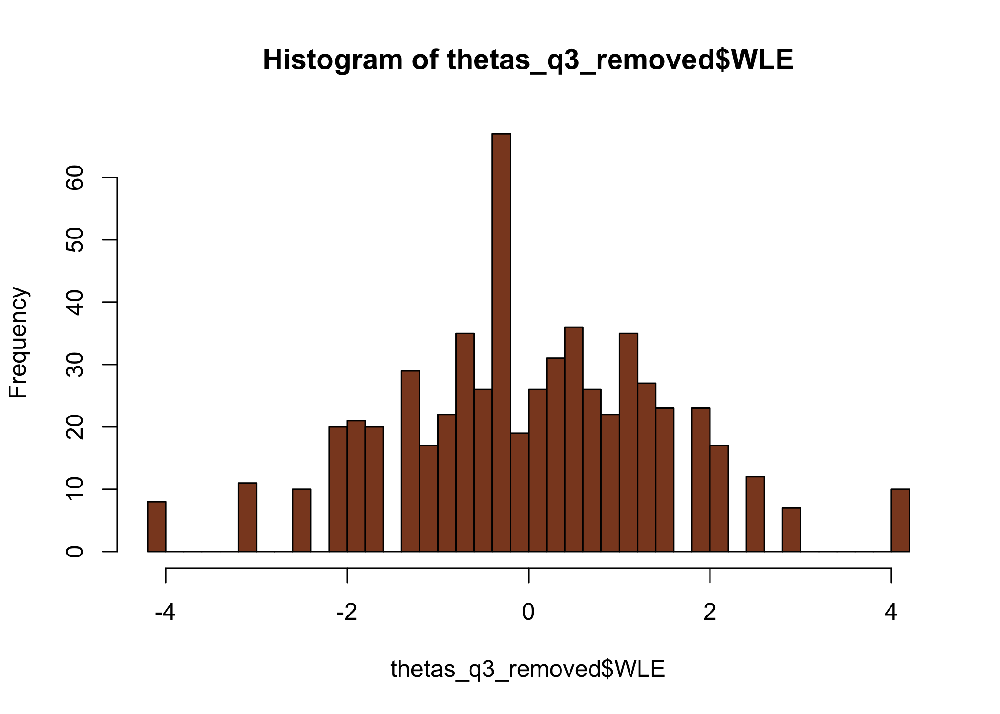
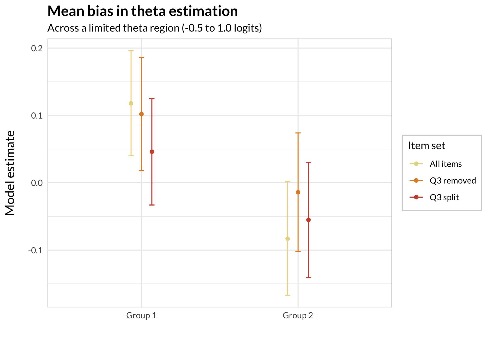

Out of interest of better understanding som aspects of differential item functioning (DIF, a form of invariance test):
how much does DIF affect estimated thetas (factor scores)?
how to do item-split in R (creating separate items for subgroups from one item with problematic DIF)
how an item-split compares to removing the item (and keeping the DIF item) in terms of absolute differences in estimated thetas
We’ll use simulated data in order to have knowledge of the thetas used to generate response data (“input thetas” in the text below), and make objective comparisons using the different estimated thetas.
Ideally, this would be a simulation study where we create lots of datasets with a systematic variation in some parameters to investigate effects. But maybe this is a first step towards that.
# make a tibble/dataframe also, for possible later useinputParams1<-tibble( q1 =c(1.2, 1.8, 2.4), q2 =c(-1.3, -0.5, 0.5), q3a =c(-0.3, 0.3, 1.2), # this is the DIF item q3b =c(-0.3+1, 0.3+1, 1.2+1), # this is the DIF item q4 =c(0.1, 0.6, 1.6), q5 =c(-0.3, 0.7, 1.5), q6 =c(-1.6, -1, -0.3), q7 =c(1, 1.8, 2.5), q8 =c(-1.3, -0.7, 0.4), q9 =c(-0.8, 1.4, 1.9), q10 =c(0.25, 1.25, 2.15))%>%t()%>%as.matrix()# center to 0inputParams1c<-inputParams1-mean(inputParams1)# item list for simulation for group 1tlist1<-list( q1 =list(inputParams1c[1,]), q2 =list(inputParams1c[2,]), q3 =list(inputParams1c[3,]), # this is the DIF item q4 =list(inputParams1c[5,]), q5 =list(inputParams1c[6,]), q6 =list(inputParams1c[7,]), q7 =list(inputParams1c[8,]), q8 =list(inputParams1c[9,]), q9 =list(inputParams1c[10,]), q10 =list(inputParams1c[11,]))# item list for simulation for group 2tlist2<-list( q1 =list(inputParams1c[1,]), q2 =list(inputParams1c[2,]), q3 =list(inputParams1c[4,]), # this is the DIF item q4 =list(inputParams1c[5,]), q5 =list(inputParams1c[6,]), q6 =list(inputParams1c[7,]), q7 =list(inputParams1c[8,]), q8 =list(inputParams1c[9,]), q9 =list(inputParams1c[10,]), q10 =list(inputParams1c[11,]))
Then generate random thetas that we save to file to be able to reproduce the analysis.
Code
# simulate thetasthetas1<-rnorm(300, mean =0, sd =1.5)thetas2<-rnorm(300, mean =0, sd =1.5)input_thetas<-c(thetas1,thetas2)# simulate response data based on the above defined item thresholdstd1<-SimPartialScore( deltaslist =tlist1, thetavec =thetas1)%>%as.data.frame()td2<-SimPartialScore( deltaslist =tlist2, thetavec =thetas2)%>%as.data.frame()d<-rbind(td1,td2)%>%add_column(group =rep(1:2, each =300))dif.group<-factor(d$group)d$group<-NULLall_data<-list(simResponses =d, dif_group =dif.group, input_thetas =input_thetas)# save simulated data for reproducibility#saveRDS(all_data,"dif_magnitude_1_0.Rdata")
Code
# read simulated data for reprodubilityall_data<-readRDS("dif_magnitude_1_0.Rdata")d<-all_data$simResponsesdif.group<-all_data$dif_groupinput_thetas<-all_data$input_thetas
We now have 10 items with 4 categories each. There are 600 respondents in all, with 300 showing differential item functioning for one item (item q3). DIF is induced at +1 logit uniform difference in location (all thresholds for item q3 are unformly +1 logits).
Values highlighted in red are above the chosen cutoff 0.5 logits. Background color brown and blue indicate the lowest and highest values among the DIF groups.
DIF clearly shown, however it is closer to 0.8 logits than the 1.0 used in the input values. This is still generally considered to be a large DIF size, so it should serve our purpose.
2.4 Item split
Now, we’ll do an item split and compare thetas for both groups with and without split, and also with the DIF item removed.
Item threshold locations for the q3 split items range from -1 logits to +1.5 logits along the theta/latent continuum. This is roughly the range where we expect some impact from DIF.
thetas_separate<-RIestThetas(d2)hist(thetas_separate$WLE, breaks =30, col ="lightblue")hist(thetas_together$WLE, breaks =30, col ="lightpink")hist(thetas_q3_removed$WLE, breaks =30, , col ="sienna4")summary(thetas_separate$WLE)summary(thetas_together$WLE)summary(thetas_q3_removed$WLE)

Min. 1st Qu. Median Mean 3rd Qu. Max.
-4.3090 -1.0323 -0.1378 -0.3004 0.6439 2.2196
Min. 1st Qu. Median Mean 3rd Qu. Max.
-4.22145 -0.89478 0.06713 -0.03405 0.94001 4.10588
Min. 1st Qu. Median Mean 3rd Qu. Max.
-4.15902 -0.96844 -0.02300 -0.01072 1.00094 4.06447
The upper range is rather different for the item split subgroup when using this method, with max score of 2.22, compared to (expected) ~ 4.1. Let’s review the threshold locations.
The method for estimating item parameters and thetas used in the function RIestThetas() may be at fault for the odd results in thetas estimated by the item set with item split? We can separate the two steps, and use a separate function for theta estimation with manual input of item parameters.
Looks like the two step approach worked a lot better. Since the item parameter estimation is identical (both are using eRm::PCM()), the reason should be the difference in theta estimation. The two-step approach uses catR::thetaEst() for theta estimation, which is probably handling missing data better than iarm::person_estimates(). Note: both approaches use the Weighted Likelihood Estimation to minimize bias (Warm, 1989).
3 Results
3.1 Summarised
First, absolute differences in estimated thetas compared to input thetas. By using absolute differences we can assess both DIF groups simultaneously.
Code
c_diff<-c%>%mutate(with_q3 =abs(together_RIestThetas-input_thetas), q3_removed =abs(together_q3_rem-input_thetas), q3_split =abs(separate_catR-input_thetas))%>%select(!names(c))c_diff%>%pivot_longer(everything())%>%ggplot(aes(x =value))+geom_histogram(bins =100)+facet_wrap(~name, ncol =1)+labs(x ="Absolute difference in logits", title ="Comparing input thetas to estimated", subtitle ="Distribution of bias")
We should look more closely at the particular region where the DIF item is located, since it should have the most impact there.
3.2 Across the latent continuum
First, the test information function (TIF) curve could be of interest to understand what to expect in terms of estimation bias due to reliability limitations. Even more interesting is the table showing range of SEM.
The lowest SEM with q3 is 0.384, at logit score 0.356.
Lowest SEM without q3 is 0.416, at logit score 0.322 to 0.491, which makes a difference in minimal SEM of about 0.032 compared to including the DIF item. 0.032 * 1.96 = 0.063 for a 95% CI.
Item split slightly reduces bias compared to keeping the DIF item (3), while removing item 3 increases bias in the theta range of about -1 to +1.5 logits. The maximum bias looks like approximately 0.055 logits (at theta = 0), according to the loess smoothed line.
3.4 Statistical analysis of means (limited range)
While the practical impact of theta estimation bias induced by a DIF variable should be judged by how problematic the maximum bias is for the intended use and need for precision, it could be interesting to quantify the differences using statistical analysis. It is sometimes suggested to look at the mean of the groups, but I think this is mistaken. The bias is local and related to the DIF item’s location, which makes it relevant to look at that region separately.
As such, the comparison below is about mean differences in estimated thetas to input thetas, limited to the theta range from -0.5 to +1 logits, where differences seem the biggest according to Figure 1. Note that the figure shows loess smoothed lines that include both groups.
We need to do this separately for the two DIF groups, since the groups will have opposite effects of the DIF.
rbind(g1,g2)%>%add_column(Group =rep(c("Group 1","Group 2"), each =3))%>%ggplot(aes(x =Group, y =estimate, color =Model))+geom_point(position =position_dodge(width =0.2))+geom_errorbar(aes(ymin =conf.low, ymax =conf.high), width =0.1, position =position_dodge(width =0.2))+scale_color_ghibli_d("MononokeMedium", direction =-1)+labs(color ="Item set", title ="Mean bias in theta estimation", subtitle ="Across a limited theta region (-0.5 to 1.0 logits)", y ="Model estimate", x ="")

Since we are primarily interested in comparing the different item sets to each other, it is not the difference from input thetas (estimate = 0) that is most relevant here. As such, I chose to display 84% confidence intervals to be able to assess differences between item sets in each group by looking at whether the CI’s overlap or not.
---title: "Rasch DIF magnitude & item split"subtitle: "Brief exploration of Differential Item Functioning in R"author: name: Magnus Johansson affiliation: RISE Research Institutes of Sweden affiliation-url: https://www.ri.se/en/shic orcid: 0000-0003-1669-592Xdate: 2024-10-27citation: type: 'webpage'csl: apa.cslexecute: cache: true warning: false message: falseeditor: markdown: wrap: 72editor_options: chunk_output_type: console---## BackgroundOut of interest of better understanding som aspects of differential item functioning (DIF, a form of invariance test):- how much does DIF affect estimated thetas (factor scores)?- how to do item-split in R (creating separate items for subgroups from one item with problematic DIF)- how an item-split compares to removing the item (and keeping the DIF item) in terms of absolute differences in estimated thetasWe'll use simulated data in order to have knowledge of the thetas used to generate response data ("input thetas" in the text below), and make objective comparisons using the different estimated thetas.Ideally, this would be a simulation study where we create lots of datasets with a systematic variation in some parameters to investigate effects. But maybe this is a first step towards that.```{r}#| code-fold: truelibrary(tidyverse)library(eRm)library(iarm)library(mirt)library(catR)library(RISEkbmRasch) # devtools::install_github("pgmj/RISEkbmRasch", dependencies = TRUE)library(summarytools)library(ghibli)library(broom)### some commands exist in multiple packages, here we define preferred ones that are frequently usedselect <- dplyr::selectcount <- dplyr::countrecode <- car::recoderename <- dplyr::renametheme_rise <-function(fontfamily ="Lato", axissize =13, titlesize =15,margins =12, axisface ="plain", panelDist =0.6, ...) {theme_minimal() +theme(text =element_text(family = fontfamily),axis.title.x =element_text(margin =margin(t = margins),size = axissize ),axis.title.y =element_text(margin =margin(r = margins),size = axissize ),plot.title =element_text(face ="bold",size = titlesize ),axis.title =element_text(face = axisface ),plot.caption =element_text(face ="italic" ),legend.text =element_text(family = fontfamily),legend.background =element_rect(color ="lightgrey"),strip.background =element_rect(color ="lightgrey"),panel.spacing =unit(panelDist, "cm", data =NULL),panel.border =element_rect(color ="grey", fill =NA), ... )}theme_set(theme_rise())```### Simulate response dataFirst define input parameters for items.```{r}# make a tibble/dataframe also, for possible later useinputParams1 <-tibble(q1 =c(1.2, 1.8, 2.4),q2 =c(-1.3, -0.5, 0.5),q3a =c(-0.3, 0.3, 1.2), # this is the DIF itemq3b =c(-0.3+1, 0.3+1, 1.2+1), # this is the DIF itemq4 =c(0.1, 0.6, 1.6),q5 =c(-0.3, 0.7, 1.5),q6 =c(-1.6, -1, -0.3),q7 =c(1, 1.8, 2.5),q8 =c(-1.3, -0.7, 0.4),q9 =c(-0.8, 1.4, 1.9),q10 =c(0.25, 1.25, 2.15)) %>%t() %>%as.matrix()# center to 0inputParams1c <- inputParams1 -mean(inputParams1)# item list for simulation for group 1tlist1 <-list(q1 =list(inputParams1c[1,]),q2 =list(inputParams1c[2,]),q3 =list(inputParams1c[3,]), # this is the DIF itemq4 =list(inputParams1c[5,]),q5 =list(inputParams1c[6,]),q6 =list(inputParams1c[7,]),q7 =list(inputParams1c[8,]),q8 =list(inputParams1c[9,]),q9 =list(inputParams1c[10,]),q10 =list(inputParams1c[11,]))# item list for simulation for group 2tlist2 <-list(q1 =list(inputParams1c[1,]),q2 =list(inputParams1c[2,]),q3 =list(inputParams1c[4,]), # this is the DIF itemq4 =list(inputParams1c[5,]),q5 =list(inputParams1c[6,]),q6 =list(inputParams1c[7,]),q7 =list(inputParams1c[8,]),q8 =list(inputParams1c[9,]),q9 =list(inputParams1c[10,]),q10 =list(inputParams1c[11,]))```Then generate random thetas that we save to file to be able to reproduce the analysis.```{r}#| eval: false# simulate thetasthetas1 <-rnorm(300, mean =0, sd =1.5)thetas2 <-rnorm(300, mean =0, sd =1.5)input_thetas <-c(thetas1,thetas2)# simulate response data based on the above defined item thresholdstd1 <-SimPartialScore(deltaslist = tlist1,thetavec = thetas1) %>%as.data.frame()td2 <-SimPartialScore(deltaslist = tlist2,thetavec = thetas2) %>%as.data.frame()d <-rbind(td1,td2) %>%add_column(group =rep(1:2, each =300))dif.group <-factor(d$group)d$group <-NULLall_data <-list(simResponses = d,dif_group = dif.group,input_thetas = input_thetas)# save simulated data for reproducibility#saveRDS(all_data,"dif_magnitude_1_0.Rdata")``````{r}# read simulated data for reprodubilityall_data <-readRDS("dif_magnitude_1_0.Rdata")d <- all_data$simResponsesdif.group <- all_data$dif_groupinput_thetas <- all_data$input_thetas```We now have 10 items with 4 categories each. There are 600 respondents in all, with 300 showing differential item functioning for one item (item q3). DIF is induced at +1 logit uniform difference in location (all thresholds for item q3 are unformly +1 logits).## DIF assessmentLet's test for DIF with some different methods.### LR-test```{r}RIdifTableLR(d, dif.group)RIdifThreshFigLR(d, dif.group)```### Partial gamma```{r}RIpartgamDIF(d, dif.group)```### Psychotree```{r}RIdifTable(d, dif.group)```DIF clearly shown, however it is closer to 0.8 logits than the 1.0 used in the input values. This is still generally considered to be a large DIF size, so it should serve our purpose.### Item splitNow, we'll do an item split and compare thetas for both groups with and without split, and also with the DIF item removed.``` {r}thetas_together <- RIestThetas(d)thetas_q3_removed <- RIestThetas(d %>% select(!q3))d2 <- d %>% add_column(group = dif.group) %>% mutate(q3a = if_else(group == 1, q3, NA), q3b = if_else(group == 2, q3, NA) ) %>% select(!group) %>% select(!q3)```Let's look at the data and a targeting plot.``` {r}RItileplot(d2)RImissing(d2)RItargeting(d2)```Item threshold locations for the q3 split items range from -1 logits to +1.5 logits along the theta/latent continuum. This is roughly the range where we expect some impact from DIF.Comparing targeting to non-split data.```{r}RItargeting(d)itemlabels <-data.frame(itemnr =names(d), item ="")RIitemHierarchy(d)```### Estimating thetas```{r}#| layout-ncol: 2thetas_separate <-RIestThetas(d2)hist(thetas_separate$WLE, breaks =30, col ="lightblue")hist(thetas_together$WLE, breaks =30, col ="lightpink")hist(thetas_q3_removed$WLE, breaks =30, , col ="sienna4")summary(thetas_separate$WLE)summary(thetas_together$WLE)summary(thetas_q3_removed$WLE)```The upper range is rather different for the item split subgroup when using this method, with max score of 2.22, compared to (expected) ~ 4.1. Let's review the threshold locations.### Comparing item parameters::: panel-tabset#### Original data```{r}RIitemparams(d)```#### Item split```{r}RIitemparams(d2)```#### DIF item removed```{r}RIitemparams(d %>%select(!q3))```#### Plot estimation bias```{r}#| code-fold: truedp <-RIitemparams(d, output ="dataframe") %>%select(!Location) %>%set_names(paste0("orig_",1:3)) %>%rownames_to_column("item") %>%filter(!str_detect(item,"q3"))dp2 <-RIitemparams(d2, output ="dataframe") %>%select(!Location) %>%set_names(paste0("split_",1:3)) %>%rownames_to_column("item") %>%filter(!str_detect(item,"q3"))dp3 <-RIitemparams(d %>%select(!q3), output ="dataframe") %>%select(!Location) %>%set_names(paste0("q3rem_",1:3)) %>%rownames_to_column("item") %>%filter(!str_detect(item,"q3"))d_params <-cbind(dp,dp2[,-1],dp3[,-1]) # bind columns, keeping one "item" columndpin <- inputParams1c %>%as.data.frame() %>%set_names(paste0("input_",1:3)) %>%rownames_to_column("item") %>%filter(!str_detect(item,"q3"))dpin_long <- dpin %>%pivot_longer(!item,names_sep ="_",names_to =c("source","threshold"),values_to ="input")``````{r}#| code-fold: trued_params %>%pivot_longer(!item, names_sep ="_",names_to =c("source","threshold")) %>%left_join(dpin_long[,-2], by =c("item","threshold")) %>%group_by(source,item,threshold) %>%summarise(abs_diff =abs(input - value)) %>%ggplot(aes(x = threshold, y = abs_diff, color = source)) +geom_point(size =2, alpha =0.85) +geom_line(aes(group = source)) +facet_wrap(~ item) +labs(x ="Absolute bias (logits)")```#### Summary plot estimation bias```{r}#| code-fold: trueitemlocs <-RIitemparams(d %>%select(!q3), output ="dataframe") %>%pull(Location)item_order <-sort(as.numeric(itemlocs))d_params %>%pivot_longer(!item, names_sep ="_",names_to =c("source","threshold")) %>%left_join(dpin_long[,-2], by =c("item","threshold")) %>%group_by(source,item,threshold) %>%summarise(abs_diff =abs(input - value)) %>%ungroup() %>%group_by(source,item) %>%summarise(sum_diff =sum(abs_diff)) %>%ungroup() %>%pivot_wider(values_from ="sum_diff",names_from ="source",id_cols ="item") %>%pivot_longer(!item) %>%mutate(item =factor(item, levels =names(itemlocs), labels =paste0(names(itemlocs),"_",as.numeric(itemlocs)))) %>%ggplot(aes(x = item, y = value, color = name) ) +geom_point(size =3) +labs(title ="Total estimation bias for each item (all thresholds) and item set",y ="Absolute bias (logits)",x ="Item (and average location)") +scale_y_continuous(limits =c(0,NA))```:::#### `mirt` comparisonPerhaps the `mirt` package could be more accurate in item threshold estimation when we have item split?```{r}#| code-fold: truemirt_out <-mirt(data = d, model =1, itemtype ="Rasch", verbose =FALSE)mirt_params <-coef(mirt_out, simplify =TRUE, IRTpars =TRUE)$items %>%as.data.frame() %>%select(!a) %>%set_names(paste0("orig_",1:3)) %>%as.matrix()dpm <- mirt_params -mean(mirt_params)dpm <- dpm %>%as.data.frame() %>%rownames_to_column("item") %>%filter(!str_detect(item,"q3"))mirt_out <-mirt(data = d2, model =1, itemtype ="Rasch", verbose =FALSE)mirt_params <-coef(mirt_out, simplify =TRUE, IRTpars =TRUE)$items %>%as.data.frame() %>%select(!a) %>%set_names(paste0("split_",1:3)) %>%as.matrix()dpm2 <- mirt_params -mean(mirt_params)dpm2 <- dpm2 %>%as.data.frame() %>%rownames_to_column("item") %>%filter(!str_detect(item,"q3"))mirt_out <-mirt(data = d %>%select(!q3), model =1, itemtype ="Rasch", verbose =FALSE)mirt_params <-coef(mirt_out, simplify =TRUE, IRTpars =TRUE)$items %>%as.data.frame() %>%select(!a) %>%set_names(paste0("q3rem_",1:3)) %>%as.matrix()dpm3 <- mirt_params -mean(mirt_params)dpm3 <- dpm3 %>%as.data.frame() %>%rownames_to_column("item") %>%filter(!str_detect(item,"q3"))d_params2 <-cbind(dpm,dpm2[,-1],dpm3[,-1]) # bind columns, keeping one "item" column```::: panel-tabset#### Plot estimation bias```{r}d_params2 %>%pivot_longer(!item, names_sep ="_",names_to =c("source","threshold")) %>%left_join(dpin_long[,-2], by =c("item","threshold")) %>%group_by(source,item,threshold) %>%summarise(abs_diff =abs(input - value)) %>%ggplot(aes(x = threshold, y = abs_diff, color = source)) +geom_point(alpha =0.85) +facet_wrap(~ item)```Seems indentical to eRm estimates.#### Summary plot estimation bias```{r}d_params2 %>%pivot_longer(!item, names_sep ="_",names_to =c("source","threshold")) %>%left_join(dpin_long[,-2], by =c("item","threshold")) %>%group_by(source,item,threshold) %>%summarise(abs_diff =abs(input - value)) %>%ungroup() %>%group_by(source,item) %>%summarise(sum_diff =sum(abs_diff)) %>%ungroup() %>%pivot_wider(values_from ="sum_diff",names_from ="source",id_cols ="item") %>%pivot_longer(!item) %>%mutate(item =factor(item, levels =names(itemlocs), labels =paste0(names(itemlocs),"_",as.numeric(itemlocs)))) %>%ggplot(aes(x = item, y = value, color = name) ) +geom_point(size =3) +labs(title ="mirt: Total estimation bias for each item and item set")```No difference here either.:::### Theta estimation investigatedThe method for estimating item parameters and thetas used in the function `RIestThetas()` may be at fault for the odd results in thetas estimated by the item set with item split? We can separate the two steps, and use a separate function for theta estimation with manual input of item parameters.```{r}itemps <-RIitemparams(d2, output ="dataframe") %>%select(!Location) %>%as.matrix()thetas_separate_catR <-RIestThetasOLD(d2, itemParams = itemps, theta_range =c(-8,8))c <-tibble(together_RIestThetas = thetas_together$WLE,together_q3_rem = thetas_q3_removed$WLE,separate_catR = thetas_separate_catR,separate_RIestThetas = thetas_separate$WLE,input_thetas = input_thetas)c %>%pivot_longer(everything(),names_to ="method",values_to ="theta") %>%ggplot(aes(x = theta)) +geom_histogram(bins =50) +facet_wrap(~method, axes ="all_x") +scale_x_continuous(breaks =seq(-5,5,1))```Looks like the two step approach worked a lot better. Since the item parameter estimation is identical (both are using `eRm::PCM()`), the reason should be the difference in theta estimation. The two-step approach uses `catR::thetaEst()` for theta estimation, which is probably handling missing data better than `iarm::person_estimates()`. Note: both approaches use the Weighted Likelihood Estimation to minimize bias (Warm, 1989).## Results ### SummarisedFirst, absolute differences in estimated thetas compared to input thetas. By using absolute differences we can assess both DIF groups simultaneously.```{r}c_diff <- c %>%mutate(with_q3 =abs(together_RIestThetas - input_thetas),q3_removed =abs(together_q3_rem - input_thetas),q3_split =abs(separate_catR - input_thetas)) %>%select(!names(c))c_diff %>%pivot_longer(everything()) %>%ggplot(aes(x = value)) +geom_histogram(bins =100) +facet_wrap(~ name, ncol =1) +labs(x ="Absolute difference in logits",title ="Comparing input thetas to estimated",subtitle ="Distribution of bias")``````{r}c_diff_descr <-descr(c_diff) %>%as.data.frame() %>%rownames_to_column("Parameter") c_diff_descr[1:9,] %>%pivot_longer(!Parameter) %>%ggplot(aes(x = Parameter, y = value, color = name)) +geom_point(alpha =0.85) +scale_color_viridis_d('Item set', end =0.8) +labs(y ="Logits",x ="Descriptive metric")``````{r}c_diff_descr[1:9,] %>%mutate_if(is.numeric, round, 3) %>%kbl_rise(tbl_width =50)```No real differences in these summary metrics.We should look more closely at the particular region where the DIF item is located, since it should have the most impact there.### Across the latent continuumFirst, the test information function (TIF) curve could be of interest to understand what to expect in terms of estimation bias due to reliability limitations. Even more interesting is the table showing range of SEM.::: panel-tabset#### TIF original data```{r}#| fig-width: 9RItif(d, samplePSI =TRUE)```#### SEM original data```{r}#| code-fold: truesem_orig <-RIscoreSE(d, output ="dataframe") %>%clean_names() %>%round(3)sem_orig_min <-min(sem_orig$logit_std_error)sem_orig %>%ggplot(aes(x = logit_score, y = logit_std_error)) +geom_point(size =2.5) +geom_line() +geom_text(data = . %>%filter(logit_std_error == sem_orig_min),aes(label = sem_orig_min), position =position_nudge(y =-0.03)) +scale_x_continuous(breaks =seq(-5,5,0.5)) +scale_y_continuous(limits =c(0,NA), breaks =seq(0,1,0.1))```#### TIF without q3```{r}#| fig-width: 9RItif(d %>%select(!q3), samplePSI =TRUE)```#### SEM without q3```{r}#| code-fold: truesem_noq3 <-RIscoreSE(d %>%select(!q3), output ="dataframe") %>%clean_names() %>%round(3)sem_noq3_min <-min(sem_noq3$logit_std_error)sem_noq3 %>%ggplot(aes(x = logit_score, y = logit_std_error)) +geom_point(size =2.5) +geom_line() +geom_text(data = . %>%filter(logit_std_error == sem_noq3_min) %>%slice(1),aes(label = sem_noq3_min), position =position_nudge(y =-0.03)) +scale_x_continuous(breaks =seq(-5,5,0.5)) +scale_y_continuous(limits =c(0,NA), breaks =seq(0,1,0.1))```:::The lowest SEM with q3 is 0.384, at logit score 0.356. Lowest SEM without q3 is 0.416, at logit score 0.322 to 0.491, which makes a difference in minimal SEM of about 0.032 compared to including the DIF item. 0.032 * 1.96 = 0.063 for a 95% CI.### Theta estimation bias::: panel-tabset#### Loess smoothing```{r}#| code-fold: true#| label: fig-loessc_diff %>%add_column(Theta = input_thetas) %>%pivot_longer(!Theta) %>%ggplot(aes(x = Theta, y = value, color =factor(name), fill =factor(name))) +#geom_point(alpha = 0.85) +geom_smooth(method ="loess",aes(linetype =factor(name)), alpha =0.15) +scale_color_ghibli_d("MononokeMedium", direction =-1) +scale_fill_ghibli_d("MononokeMedium", direction =-1) +labs(color ="Item set",title ="Theta estimation bias",y ="Absolute difference (logits)") +guides(fill ="none", linetype ="none") +scale_x_continuous(breaks =seq(-5,5,1)) +scale_y_continuous(limits =c(0,NA), breaks =seq(0,1.2,0.1)) +theme_rise()```#### Scatterplot```{r}#| code-fold: truec_diff %>%add_column(Theta = input_thetas) %>%pivot_longer(!Theta) %>%ggplot(aes(x = Theta, y = value, color =factor(name), fill =factor(name))) +geom_point(alpha =0.85) +scale_color_ghibli_d("MononokeMedium", direction =-1) +scale_fill_ghibli_d("MononokeMedium", direction =-1) +labs(color ="Item set",title ="Theta estimation bias",y ="Absolute difference in logits") +guides(fill ="none", linetype ="none") +scale_x_continuous(breaks =seq(-5,5,1)) +scale_y_continuous(limits =c(0,NA), breaks =seq(0,2,0.1)) +theme_rise()```#### Loess "zoomed in"```{r}#| code-fold: truec_diff %>%add_column(Theta = input_thetas) %>%pivot_longer(!Theta) %>%ggplot(aes(x = Theta, y = value, color =factor(name), fill =factor(name))) +#geom_point(alpha = 0.85) +geom_smooth(method ="loess",aes(linetype =factor(name)), alpha =0.15) +scale_color_ghibli_d("MononokeMedium", direction =-1) +scale_fill_ghibli_d("MononokeMedium", direction =-1) +labs(color ="Item set",title ="Theta estimation bias",subtitle ="Cropped to improve readability",y ="Absolute difference (logits)") +guides(fill ="none", linetype ="none") +scale_x_continuous(limits =c(-2,2), breaks =seq(-5,5,1)) +scale_y_continuous(breaks =seq(0,1.2,0.05)) +theme_rise()```:::Item split slightly reduces bias compared to keeping the DIF item (3), while removing item 3 increases bias in the theta range of about -1 to +1.5 logits. The maximum bias looks like approximately 0.055 logits (at theta = 0), according to the loess smoothed line.### Statistical analysis of means (limited range)While the practical impact of theta estimation bias induced by a DIF variable should be judged by how problematic the maximum bias is for the intended use and need for precision, it could be interesting to quantify the differences using statistical analysis. It is sometimes suggested to look at the mean of the groups, but I think this is mistaken. The bias is local and related to the DIF item's location, which makes it relevant to look at that region separately. As such, the comparison below is about mean differences in estimated thetas to input thetas, limited to the theta range from -0.5 to +1 logits, where differences seem the biggest according to [@fig-loess]. Note that the figure shows loess smoothed lines that include both groups.We need to do this separately for the two DIF groups, since the groups will have opposite effects of the DIF.```{r}#| code-fold: truec %>%add_column(group = dif.group) %>%filter(group ==1) %>%select(c(separate_catR,input_thetas)) %>%filter(input_thetas >-0.5& input_thetas <1) %>%nrow()c %>%add_column(group = dif.group) %>%filter(group ==2) %>%select(c(separate_catR,input_thetas)) %>%filter(input_thetas >-0.5& input_thetas <1) %>%nrow()```n = 130 and 115. More than a third of each group is located within the range affected by DIF.```{r}#| code-fold: truelm_all <- c %>%add_column(group = dif.group) %>%filter(group ==1) %>%select(c(together_RIestThetas,input_thetas)) %>%filter(input_thetas >-0.5& input_thetas <1) %>%pivot_longer(everything()) %>%lm(value ~ name, data = .)lm_q3rem <- c %>%add_column(group = dif.group) %>%filter(group ==1) %>%select(c(together_q3_rem,input_thetas)) %>%filter(input_thetas >-0.5& input_thetas <1) %>%pivot_longer(everything()) %>%lm(value ~ name, data = .)lm_q3split <- c %>%add_column(group = dif.group) %>%filter(group ==1) %>%select(c(separate_catR,input_thetas)) %>%filter(input_thetas >-0.5& input_thetas <1) %>%pivot_longer(everything()) %>%lm(value ~ name, data = .)g1 <-bind_rows(tidy(lm_all, conf.int =TRUE, conf.level = .84) %>%slice(2),tidy(lm_q3rem, conf.int =TRUE, conf.level = .84) %>%slice(2),tidy(lm_q3split, conf.int =TRUE, conf.level = .84) %>%slice(2) ) %>%select(!term) %>%round(3) %>%add_column(Model =c("All items","Q3 removed","Q3 split"), .before ="estimate")``````{r}#| code-fold: truelm_all2 <- c %>%add_column(group = dif.group) %>%filter(group ==2) %>%select(c(together_RIestThetas,input_thetas)) %>%filter(input_thetas >-0.5& input_thetas <1) %>%pivot_longer(everything()) %>%lm(value ~ name, data = .)lm_q3rem2 <- c %>%add_column(group = dif.group) %>%filter(group ==2) %>%select(c(together_q3_rem,input_thetas)) %>%filter(input_thetas >-0.5& input_thetas <1) %>%pivot_longer(everything()) %>%lm(value ~ name, data = .)lm_q3split2 <- c %>%add_column(group = dif.group) %>%filter(group ==2) %>%select(c(separate_catR,input_thetas)) %>%filter(input_thetas >-0.5& input_thetas <1) %>%pivot_longer(everything()) %>%lm(value ~ name, data = .)g2 <-bind_rows(tidy(lm_all2, conf.int =TRUE, conf.level = .84) %>%slice(2),tidy(lm_q3rem2, conf.int =TRUE, conf.level = .84) %>%slice(2),tidy(lm_q3split2, conf.int =TRUE, conf.level = .84) %>%slice(2) ) %>%select(!term) %>%round(3) %>%add_column(Model =c("All items","Q3 removed","Q3 split"), .before ="estimate")```#### Results figure```{r}rbind(g1,g2) %>%add_column(Group =rep(c("Group 1","Group 2"), each =3)) %>%ggplot(aes(x = Group, y = estimate, color = Model)) +geom_point(position =position_dodge(width =0.2)) +geom_errorbar(aes(ymin = conf.low, ymax = conf.high),width =0.1,position =position_dodge(width =0.2)) +scale_color_ghibli_d("MononokeMedium", direction =-1) +labs(color ="Item set",title ="Mean bias in theta estimation",subtitle ="Across a limited theta region (-0.5 to 1.0 logits)",y ="Model estimate", x ="")```Since we are primarily interested in comparing the different item sets to each other, it is not the difference from input thetas (estimate = 0) that is most relevant here. As such, I chose to display 84% confidence intervals to be able to assess differences between item sets in each group by looking at whether the CI's overlap or not.#### Theta bias - loess by group```{r}#| code-fold: truec_diff %>%add_column(Theta = input_thetas) %>%mutate(Group =case_match(dif.group, "1"~"Group 1","2"~"Group 2")) %>%pivot_longer(!(c("Theta","Group"))) %>%ggplot(aes(x = Theta, y = value, color =factor(name), fill =factor(name))) +#geom_point(alpha = 0.85) +geom_smooth(method ="loess",aes(linetype =factor(name)), alpha =0.15) +scale_color_ghibli_d("MononokeMedium", direction =-1) +scale_fill_ghibli_d("MononokeMedium", direction =-1) +labs(color ="Item set",title ="Theta estimation bias",subtitle ="Cropped to improve readability",y ="Absolute difference (logits)") +guides(fill ="none", linetype ="none") +scale_x_continuous(limits =c(-2,2), breaks =seq(-5,5,1)) +scale_y_continuous(breaks =seq(0,1.2,0.05)) +facet_wrap(~Group, ncol =1,) +theme_rise()```## Session info```{r}sessionInfo()```
![]()